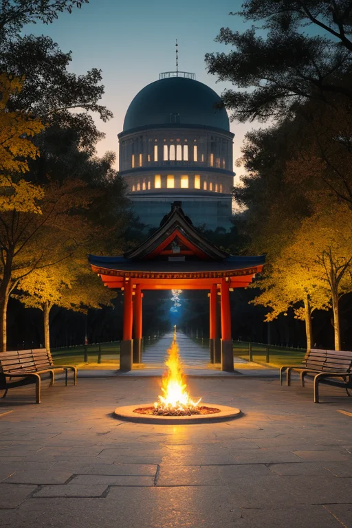

第一章 現実の広島
あなたはまだ気づいていない。この土地にも、王がいることを。
瀬戸内の穏やかな海は、時に荒れ狂う。しまなみ海道が架かる島々の間を、境界線は走る。ここは、内と外、山と海、過去と現在がせめぎ合う土地だ。路面電車が街をゆっくりと走り、お好み焼きの香りが漂う日常の裏側で、土地は微かに軋んでいる。歪みは、海の底から、山の褶曲から、そして人々の記憶の底から、静かに湧き上がってくる。
原爆ドームは、川面にその姿を映す。それは過去の断片であり、今も続く現在の一部だ。訪れる人々が手を合わせ、写真を撮る。その無数の視線と想いが、土地に重く、優しく積もっていく。平和記念公園の「平和の灯」は、雨の日も風の日も消えることなく燃え続けている。この場所で、哀しみは消費されるのではなく、静かに保持され、変換されようとしている。
海を隔てて厳島神社の大鳥居が立つ。満潮時には海に浮かび、干潮時には人が歩いて近づける。その移ろいやすさが、この土地の本質だ。すべてが境界線上にある。ヒロシマリア・フェニクスは、その鳥居の影のように、静かに佇んでいた。彼女の目には、この土地に蓄積されたすべての記憶の重さが映っている。彼女はそれを背負い、調整するためにここにいる。感情を持たぬはずの王の胸に、初めて、鎮魂という名の澱のようなものが沈殿し始めていた。
第二章 歪みの兆候
路面電車が平和記念公園前の線路を軋ませて走る。その車窓から、原爆ドームの骨組みが一瞬、歪んだように見えた。ヒロシマリアは、平和の灯の揺らぎを凝視していた。彼女の王国に、外部から新たな「歪み」が流入し始めていた。それは物理的な亀裂ではない。観光客の増加、SNSによる情報の氾濫、そして無意識の消費。記憶が薄められ、形骸化され、時に傷つけられるという、目に見えない圧力だった。
「フェニア」彼女は傍らに立つ主席妖精に静かに語りかけた。「彼らの悲しみは、今もここに沈殿している。しかし、新たな波がそれを攪拌しようとしている」
フェニアは深く頷き、その静かな強さで、土地から滲み出るかすかな悲哀を吸収していく。記憶の風化は、避けられない自然の摂理かもしれない。だが、意図せざる忘却や、軽薄な接触は、この土地の持つ「鎮魂」の質感そのものを損なう。ヒロシマリアは、厳島の沖を漂うミヤジマナに念を送った。境界線である海の波が、外部の雑音を幾分か濾過してくれるように。彼女ができるのは、この流入する歪みを、ほんの少し、和らげることだけだった。
第三章 受け入れるか拒むかの選択
路面電車が平和記念公園前をゆっくりと走り抜ける。観光客のざわめき、修学旅行生の無邪気な笑い声。それらは決して悪意ではない。しかし、フェニアの胸に、かすかな棘のような痛みが走る。外部からの「軽い接触」が、土地に染み込んだ深い悲哀を、無自覚にかき乱すのだ。
「主よ、この流入を遮断すべきでしょうか」
フェニアが静かに問う。彼女の力は、流入する雑多な感情を濾過し、土地の記憶を守る「境界」を強化できる。
ヒロシマリアは原爆ドームを見つめた。鉄骨が空を切り裂くその姿は、拒絶の象徴のようでもあり、受け入れの証のようでもあった。遮断は、記憶の純度を保つ。だが、それは同時に、記憶を孤高の遺物へと封じ込めることにもなる。
「…遮断しないでくれ」
彼女は呟いた。
「痛みを伴おうとも、開かれ続けること。それこそが、ここが選んだ道だ」
彼女は手を差し伸べ、流入する雑音の「歪み」を、ほんの少しだけ和らげた。風化を止めることはできない。ただ、風化が「忘却」へと一直線に堕ちていくその傾斜を、微かに調整する。それが、記憶の王にできることだった。
第四章 妖精との対話
路面電車がレールの上を滑るように走る音が、平和記念公園の静寂に溶け込んでいた。フェニアは、原爆ドームの影に佇み、流れてくる無数の「声」を受け止めていた。それは祈りであり、怒りであり、途切れそうな問いかけであった。
「王よ、あなたはなぜ、すべてを背負おうとするのですか」
フェニアの声は、風に揺れる木々の葉音のように静かだった。
「私たちは吸収するだけです。鎮魂は、流れる川。あなたはその川底に沈み、石になろうとしている」
ヒロシマリアは、遠く厳島の方向を見つめた。潮の満干が境界を曖昧にするように、記憶もまた、内と外の狭間で形を変える。
「石になるのではない。礎になりたい。風化することを承知の上で」
ミヤジマナが、潮風を伴って現れた。
「この土地は、何度も焼かれ、何度も蘇った。焼かれた痕跡さえ、今は風景の一部。記憶が未来を救うか？ それは違う。未来を選ぶための『材木』を、記憶は供給するだけです。私たちは、その材木が腐らず、曲がらず、使い手の手に渡るまでの間、ほんの少し支える」
別れは出会いの始まり。焼失は再生の前段階。妖精たちの言葉は、単純な希望ではなく、複雑な営みの真実を伝えていた。

第五章 微調整と余韻
路面電車が、平和記念公園前の停留所に滑り込む。観光客の一団が降り、別の地元の人々が乗り込む。そのわずかな人の流れの隙間で、ヒロシマリア・フェニクスは立っていた。彼の目は、遠く原爆ドームのシルエットを見つめている。彼は何も消さない。ただ、通り過ぎる少年が転びかけた石を、ほんの少しだけ路面にめり込ませ、足を取られないようにする。風向きを微調整し、公園に舞い込む埃を減らす。それは、訪れた人が、過去と対話するための「間」を、ほんの少しだけ整える作業だ。
記憶は未来を救えない。彼は妖精たちの言葉を反芻する。救うのは、常に「今」を生きる人間の選択だ。しかし、選択には材料が必要だ。歪められない事実という材料を、この土地は痛みと共に抱え続けている。彼の役割は、その材料が風化したり、歪んだ形で伝わったりしないよう、微かに支えること。鎮魂の炎は、過去を焼き尽くすのではなく、未来へ渡す灯りを絶やさないためにある。
夕暮れ、フェニアがそっと彼の肩に触れた。何も語らない。ただ、その日の土地の「重み」を、ほんの一部だけ引き受けている。彼は、赤と金の紋章がかすかに輝くのを感じた。それは、救済の証ではなく、約束の証。この島境で、内と外の狭間で、記憶という材木を未来へと運び続けるという、静かな約束。
あなたの町にも、王がいる。